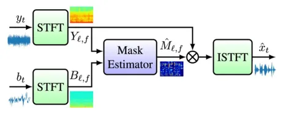

В апреле в Индии прошла конференция ICASSP 2025, на которой побывал руководитель группы встроенного голосового ввода Алексей Рак. В этом году обошлось без откровений, но кое-что любопытное всё же нашлось. Пожалуй, главный тренд: заметно меньше статей о колонках — индустрия уходит в наушники и стриминг. В этом и следующем постах разберём интересные статьи с конференции — начнём двух работ о шумоподавлении в наушниках.
Towards Sub-millisecond Latency Real-Time Speech Enhancement Models on Hearables
Статья от Google о шумоподавлении в режиме прозрачности для наушников. Такая технология нужна, когда не хочешь снимать наушники, но хочешь слышать речь вокруг. При этом нужно, чтобы голоса усиливались, а шум — наоборот, глушился. Но вся магия работает, только если нет сильной задержки. Иначе речь дублируется, так как амбушюры не полностью поглощают речь, а наушники проигрывают очищенные разговор с задержкой. Поэтому важно уложиться в лаг в пару миллисекунд.
Авторы сделали компактную нейросеть, которая предсказывает параметры FIR-фильтра — по сути, какую свёртку применить к звуку. Эта свёртка обновляется каждые 8 мс, но применяется сразу к новым аудиофрагментам, так что задержка остаётся минимальной — 2–3 мс (алгоритмическая задержка — 1 мс, а всё остальное — вычислительная). Работает даже на слабом железе — тестировали на 600 MHz HiFi4 Audio DSP(Cadence), и там всё летает.
Статья даёт понять, насколько вообще можно опустить задержку в таких системах, если аккуратно подойти к задаче и сделать лёгкую модель.
BONE CONDUCTED SIGNAL GUIDED SPEECH ENHANCEMENT FOR VOICE ASSISTANTON EARBUDS
Ещё одна статья о шумоподавлении, но уже для очистки того, что пользователь наушников говорит, а не слышит. Человек говорит в шумной обстановке (на улице, на ветру, в метро), и сам этого может даже не замечать. Снаружи всё гудит, а внутри уха — тишина. Только вот собеседнику слышно совсем не так.
В современных наушниках уже есть не только внешние микрофоны, но и внутренние, которые улавливают сигнал через кость черепа. Он искажён, но в нём почти нет внешнего шума. Его и используют.
Вход у модели — два канала: грязный внешний микрофон и искажённый, но «чистый» костный сигнал. Всё это подаётся в Cleanformer — это их старая модель, адаптированная под такую задачу. Cleanformer предсказывает маску, которую потом накладывают на внешний сигнал, чтобы его «почистить»: сохранить полезные частоты и убрать шум. Похожую модель Google использует уже довольно давно для очистки звука в умных колонках.
Цель — сделать так, чтобы в особо шумных условиях голос всё равно звучал понятно. Для реального применения такой подход годится, если в устройстве есть костный канал — а он уже есть во многих моделях наушников.
В следующей части разберём пару работ о голосовой активации.
Алексей Рак
